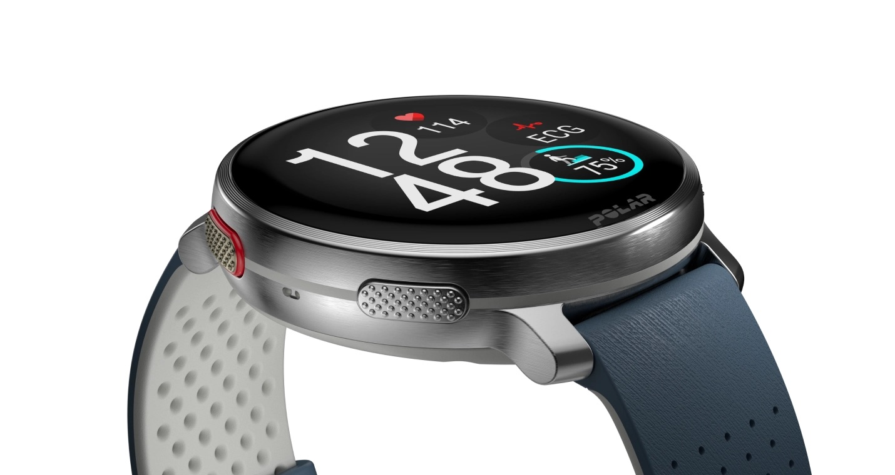

Polar Vantage V3: novo relógio inteligente premium para atletas traz ECG e termômetro

A Polar apresentou recentemente o Vantage V3, sua nova geração de smartwatches premium com sensores de alta precisão. Focado em atletas, o novo relógio é equipado com um conjunto de medidores para fornecer informações de funções corporais.
O Polar Vantage V3 adota um corpo semelhante a de relógios tradicionais, com formato redondo e discreto. Por fora, ele conta com tela AMOLED de 1,39" com resolução 454 x 454p. A proteção fica por conta do Gorilla Glass 3.0 e o corpo é construído em alumínio.

O processador não teve nome revelado, mas tem 275 MHz de frequência — segundo a empresa, 129% mais rápido que o antecessor. Ele traz 37 MB de RAM e 32 GB de armazenamento (para dados coletados pelo relógio).
Sensores de monitoramento
A tecnologia Polar Elixir é composta por um poderoso conjunto de sensores para monitoramento quase completo das funções corporais. Ele apresenta monitor de frequência cardíaca óptica (FCO) de 4ª geração, ECG de pulso para eletrocardiograma, medição de nível de oxigênio no sangue (SpO2) e termômetro.
Além de ser um poderoso monitor de atividades, ele também é um assistente para atividades físicas. O Vantage V3 suporta mais de 150 perfis de treino, alguns deles com auxílio do GPS integrado com dupla frequência. Há também suporte para mapas offline e integração para orientação passo a passo pelo Komoot.
A sua bateria promete 53 horas de treino com cada carga, ou até 8 dias inteiros de exibição e até 140 horas de treino no modo de economia de energia.
Preço e disponibilidade
O Polar Vantage V3 é vendido na loja oficial da Polar por R$ 5.499. Ele está disponível nas cores Night Black, Sky Blue e Sunrise Apricot. O acessório chegará às lojas em 25 de outubro — no Brasil, ele chega em novembro.